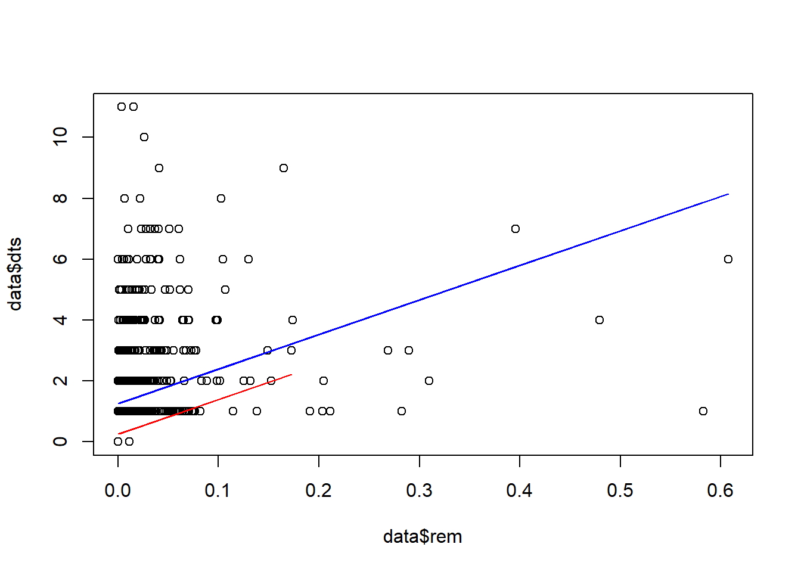
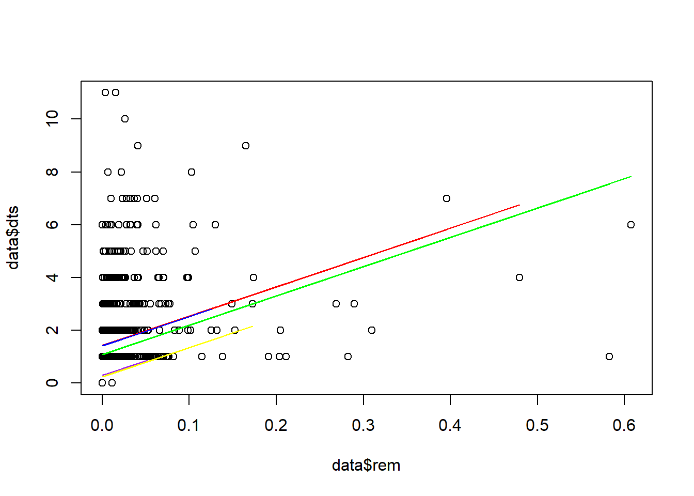
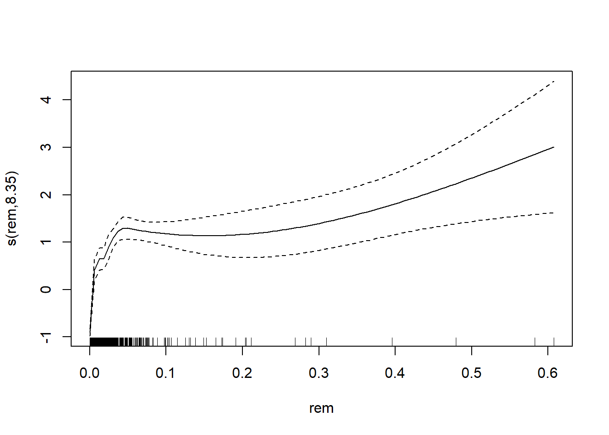
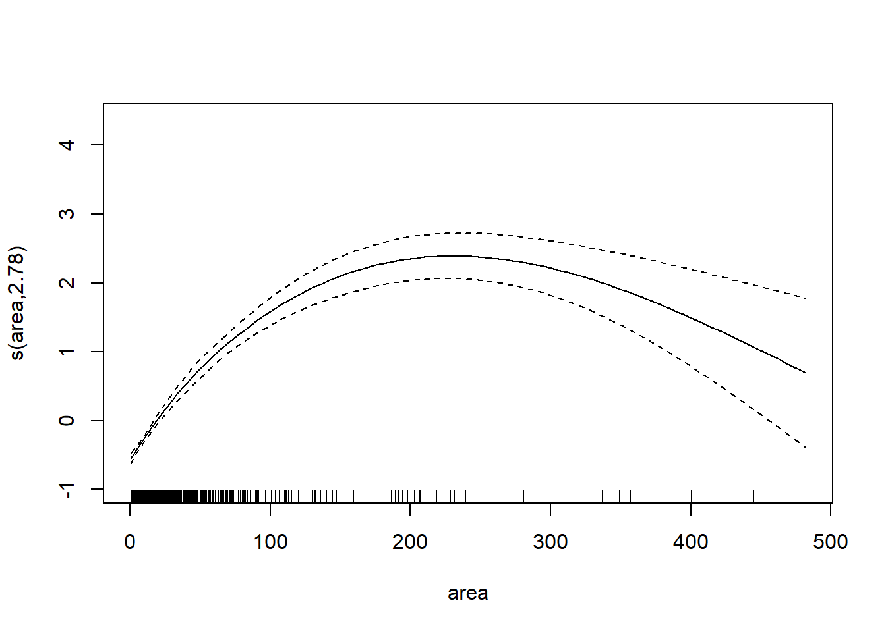

Linear models
Tad, SR Schachat
Assigned Reading:
Appendix A from: Zuur, A. F., Ieno, E. N., Walker, N., Saveliev, A. A. and Smith, G. M. 2009. Mixed Effects Models and Extensions in Ecology with R. Springer. Here’s the whole book or you can download just the appendix.
Key Points
Data exploration: outliers and collinearity
- Normality not needed for explanatory variables
- Correlation - “value of 0.6 (and -0.6) is not large enough to worry us”?
Linear regression: model selection
- Which interactions to include - opinions vary (p. 537)
summary(M1),drop1(M1, test="F"),anova(M1)- Isdrop1()the best method?- Which explanatory variables to drop - opinions vary (p. 541)
step(M1)- easy one-line command; AIC-based backwards selection
Linear regression: model validation
- Mostly done graphically
- But not very powerful when n is small (as common in ecological data?)
- Model selection, then model validation - Is this always ok?
Linear regression: model interpretation
- Graphical presentation - Data should be plotted.
Additive modeling
- Zuur et al.’s favorite tool? (more in Ch 3)
- Try model with all explanatory variables, to look at potential non-linear effect
- Difficulties: overfitting and need for large data?
Analysis Example
In this example, we’ll use linear regression to examine whether there is any sort of relationship beween Damage Type (DT) diversity and herbivorized leaf area on fossil leaves.
First, let’s read in the data:
# Read in a data file from the data folder on the BIO 202 GitHub repository
data <- read.csv("https://raw.githubusercontent.com/FukamiLab/BIO202/master/data/03-B-permian.csv")
data <- data[order(data$dts),]Now, we can simply plot DT diversity against herbivorized leaf area:
plot(data$dts~data$rem)
Not a particularly clear relationship there! We can try running a simple linear regression:
fit <- lm(dts~0+rem, data=data)
summary(fit)##
## Call:
## lm(formula = dts ~ 0 + rem, data = data)
##
## Residuals:
## Min 1Q Median 3Q Max
## -10.5759 0.0000 0.6205 1.6602 10.9268
##
## Coefficients:
## Estimate Std. Error t value Pr(>|t|)
## rem 19.876 1.255 15.84 <2e-16 ***
## ---
## Signif. codes: 0 '***' 0.001 '**' 0.01 '*' 0.05 '.' 0.1 ' ' 1
##
## Residual standard error: 1.879 on 1025 degrees of freedom
## Multiple R-squared: 0.1966, Adjusted R-squared: 0.1959
## F-statistic: 250.9 on 1 and 1025 DF, p-value: < 2.2e-16Very low p-value (< 2.2e-16), very unconvincing R-squared (0.10).
We can try plotting a different line for each site (as in Fig. A.3 from the reading, on page 544).
fit <- lm(dts~0+rem+site, data=data)
summary(fit)##
## Call:
## lm(formula = dts ~ 0 + rem + site, data = data)
##
## Residuals:
## Min 1Q Median 3Q Max
## -6.8717 -1.2556 -0.2946 0.6452 9.7026
##
## Coefficients:
## Estimate Std. Error t value Pr(>|t|)
## rem 11.35979 1.08391 10.480 <2e-16 ***
## siteCCP 1.25560 0.05452 23.031 <2e-16 ***
## siteMCF 0.25235 0.12777 1.975 0.0485 *
## ---
## Signif. codes: 0 '***' 0.001 '**' 0.01 '*' 0.05 '.' 0.1 ' ' 1
##
## Residual standard error: 1.525 on 1023 degrees of freedom
## Multiple R-squared: 0.4717, Adjusted R-squared: 0.4702
## F-statistic: 304.5 on 3 and 1023 DF, p-value: < 2.2e-16D1 <- data[data$site=="CCP",]
D2 <- data[data$site=="MCF",]
P1 <- predict(fit, newdata = D1)
P2 <- predict(fit, newdata = D2)
plot(data$dts~data$rem)
lines(D1$rem, P1, col="blue")
lines(D2$rem, P2, col="red")
We can try plotting a different line for each species instead of each site.
fit <- lm(dts~0+rem+sp, data=data)
D1 <- data[data$sp=="cau",]
D2 <- data[data$sp=="cev",]
D3 <- data[data$sp=="cta",]
D4 <- data[data$sp=="mgi",]
D5 <- data[data$sp=="mta",]
P1 <- predict(fit, newdata = D1)
P2 <- predict(fit, newdata = D2)
P3 <- predict(fit, newdata = D3)
P4 <- predict(fit, newdata = D4)
P5 <- predict(fit, newdata = D5)
plot(data$dts~data$rem)
lines(D1$rem, P1, co="red")
lines(D2$rem, P2, col="blue")
lines(D3$rem, P3, col="green")
lines(D4$rem, P4, col="purple")
lines(D5$rem, P5, col="yellow")
To be thorough, we can try adding all possible predictor variables, dropping them, and seeing what happens.
fit.full <- lm(dts~0+rem+sp+site+area, data=data)
drop1(fit.full, test="F")## Single term deletions
##
## Model:
## dts ~ 0 + rem + sp + site + area
## Df Sum of Sq RSS AIC F value Pr(>F)
## <none> 1882.4 636.66
## rem 1 188.86 2071.3 732.76 102.236 < 2.2e-16 ***
## sp 4 506.35 2388.8 873.08 68.526 < 2.2e-16 ***
## site 0 0.00 1882.4 636.66
## area 1 470.84 2353.2 863.71 254.878 < 2.2e-16 ***
## ---
## Signif. codes: 0 '***' 0.001 '**' 0.01 '*' 0.05 '.' 0.1 ' ' 1Now a run-of-the-mill GAM:
library(mgcv)
AM1 <- gam(dts ~ s(rem) + sp + site + s(area), data = data)
anova(AM1)##
## Family: gaussian
## Link function: identity
##
## Formula:
## dts ~ s(rem) + sp + site + s(area)
##
## Parametric Terms:
## df F p-value
## sp 4 6.303 5.2e-05
## site 1 2.061 0.151
##
## Approximate significance of smooth terms:
## edf Ref.df F p-value
## s(rem) 8.368 8.887 41.91 <2e-16
## s(area) 5.344 6.455 58.11 <2e-16All predictors except “site” are significant.
Now a fancy GAM with cubic regression spline with shrinkage.
AM2 <- gam(dts ~ s(rem, bs = "cs") + sp + site + s(area, bs = "cs"), data = data)
anova(AM2)##
## Family: gaussian
## Link function: identity
##
## Formula:
## dts ~ s(rem, bs = "cs") + sp + site + s(area, bs = "cs")
##
## Parametric Terms:
## df F p-value
## sp 4 4.75 0.000845
## site 1 0.29 0.590265
##
## Approximate significance of smooth terms:
## edf Ref.df F p-value
## s(rem) 8.355 9.000 56.61 <2e-16
## s(area) 2.781 9.000 37.70 <2e-16Values change but no difference in significance at p = 0.05. So let’s get rid of “site.”
AM3 <- gam(dts ~ s(rem, bs = "cs") + sp + s(area, bs = "cs"), data = data)
anova(AM3)##
## Family: gaussian
## Link function: identity
##
## Formula:
## dts ~ s(rem, bs = "cs") + sp + s(area, bs = "cs")
##
## Parametric Terms:
## df F p-value
## sp 4 4.75 0.000845
##
## Approximate significance of smooth terms:
## edf Ref.df F p-value
## s(rem) 8.355 9.000 57.1 <2e-16
## s(area) 2.781 9.000 37.7 <2e-16We can plot the smoothing function.
plot(AM3)
Discussion Questions
- Page 537: Of the 7 possible ways to treat interaction terms, which do you prefer and why?
- Page 537: What are “main terms” and why do they matter?
- Page 537: Why are 4-way interactions a bad thing? What are “Cook distance values” and “non-convergence”?
- Page 539: Review: What is RSS (residual sum of squares) and what does it tell us?
- Page 540: What are “nested models” in this context?
- Page 541: Of the 3 possible ways to treat non-significant explanatory variables, which do you prefer and why?
- Page 542: How does AIC “judge” model fit?
- Page 546: What is it about the fit of the lines in figure A.3 (pg. 544) that suggests that a linear model may not be the best fit?
- Page 546: What is a Generalized Additive Model and how does it work?
- Page 546: What is a thin plate spline and how is it relevant here?
- Page 551: When might the Aikake weight be useful?
After-class follow-up
- df = 0 for site in the
drop1()analysis above because some species were observed only in one of the two sites.